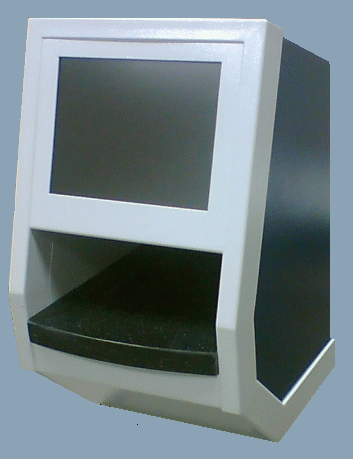
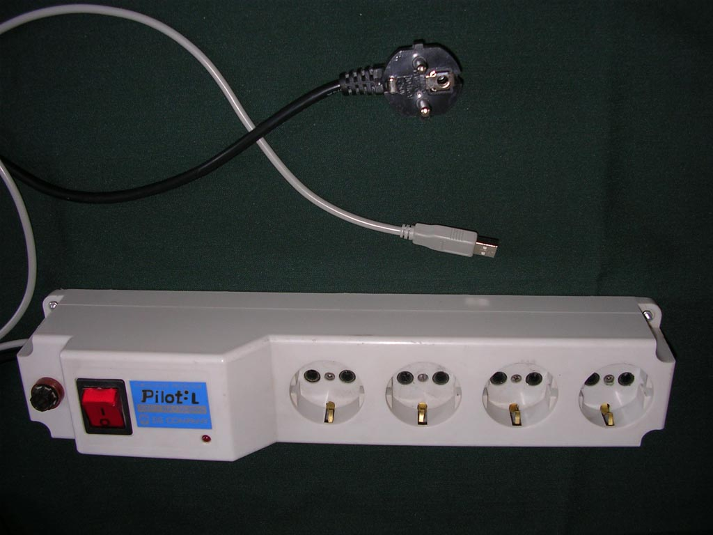
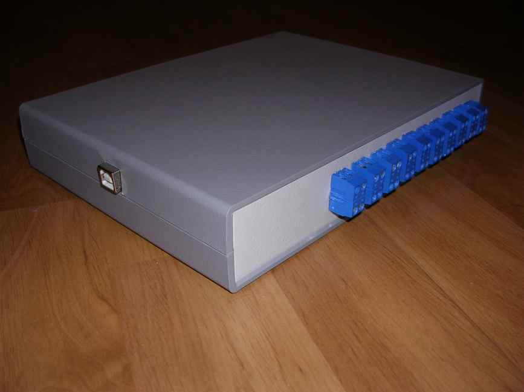
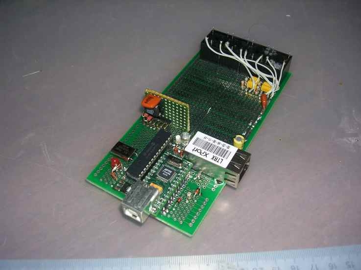

| | | | | | |
|

|
Функциональный состав аппарата 1. Монитор с контактным экраном 2. Оптическая система 3. Измерительная площадка 4. Корпус со встроенным компьютером |
Описание компьютера
Intel Pentium M713, 1.1 GHz, ULV, 512 Cache,1 GByte RAM
| |||
Дополнительное оборудование | Аппарат может быть оснащен дополнительной периферией. В данном случае предлагается вниманию блок розеток, сделанный на основе стандартного сетевого устройства "PILOT" и управляемый по протоколу USB (cм. фото 2). | ||
|  | Фото 2 | ||
| Аппарат может быть оснащен управляемым по протоколу USB (cм. фото 3) модулем, который имеет 20 релейных выходов с током нагрузки до 1 ампера. |  | Фото 3 | |
| Аппарат может быть оснащен ,бескорпусным управляемым по протоколу USB и TCP/IP (cм. фото 4) модулем, который имеет релейные выходы с током нагрузки до 10 ампер. | |||
|
 | Фото 4 | ||